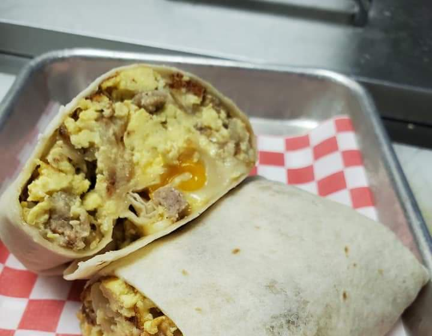
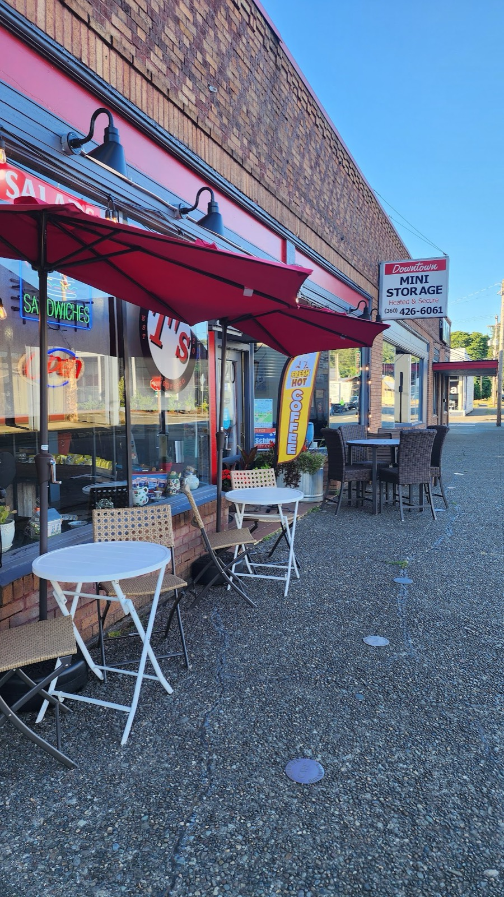
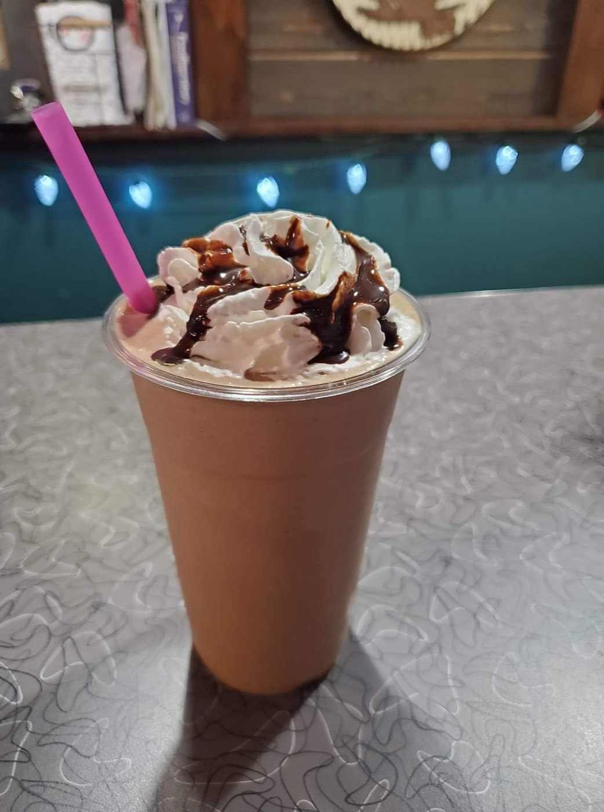
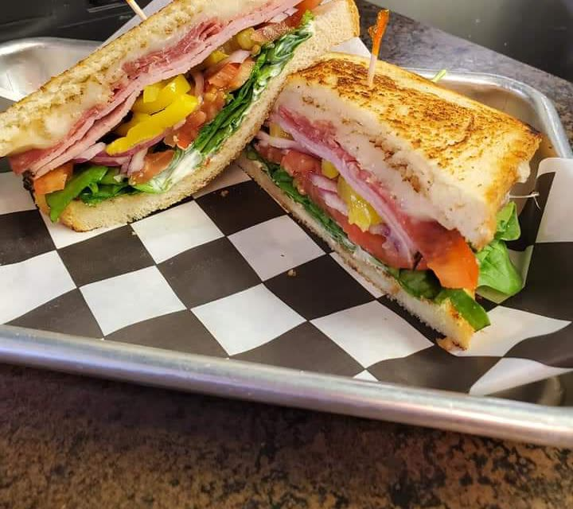
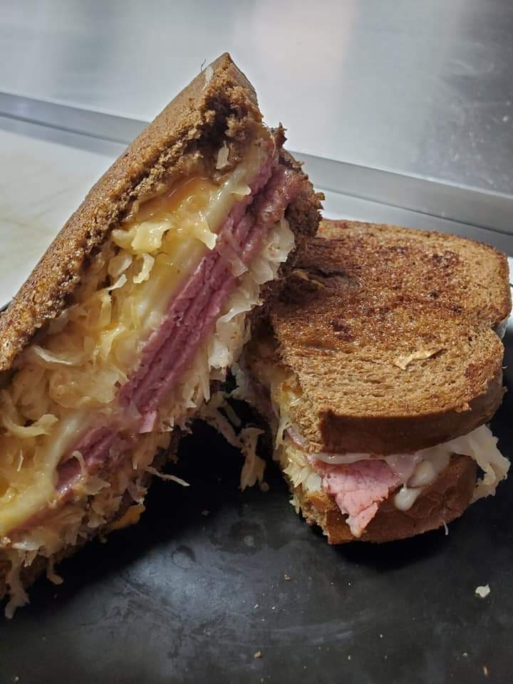
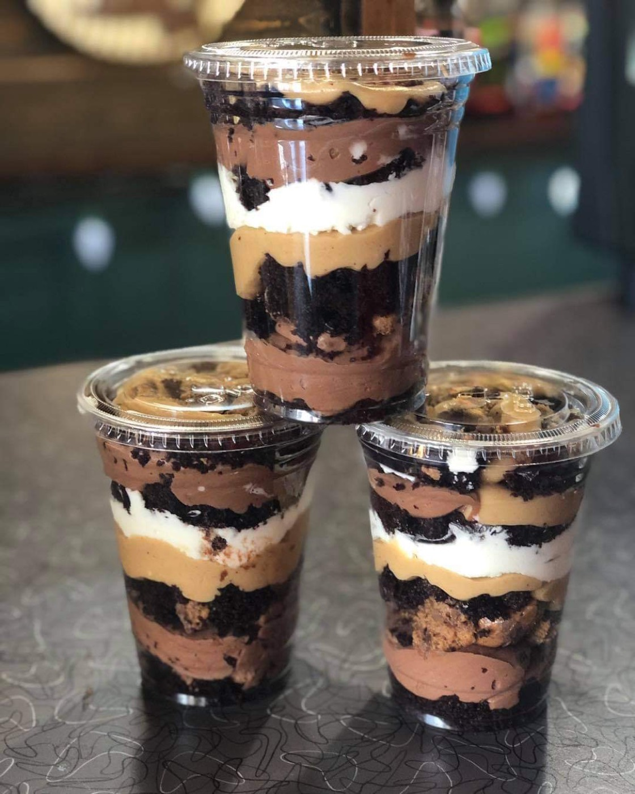

8–11 am
Breakfast
Tollie’s Breakfast or the big Train Breakfast, scrambles, burritos, breakfast sandwiches and biscuits & gravy.
from $5.99
118 S 3rd St · Downtown Shelton, WA
Specialty espresso drinks and hot teas, breakfast plates from 8 to 11, toasted hoagies, Angus burgers, fresh salads and homemade soup. Grab a seat by the fireplace or out front on the sidewalk.
Mon–Fri 7 am–3 pm · Sat 9 am–3 pm

Drawing inspired by Shelton’s “Tollie” engine
Why “Tollie’s”?
Tollie is the retired Simpson Logging Company locomotive that once hauled timber through Mason County’s forests. It sits nearly across the street from the café, and since spring 2026 the little café at 118 South 3rd carries its name.
Same cozy room downtown, a new name with Shelton’s logging history in it, and much of the menu regulars already know: fresh pastries, handcrafted sandwiches and espresso made with Batdorf & Bronson coffee.

Espresso menu
Batdorf & Bronson espresso and a long list of house specialty drinks. A few favorites:
White coffee is roasted at a lower temperature, which gives a bean with less acidity and a sweet, nutty flavor. It also has more caffeine and antioxidants than traditionally roasted coffee.
From the kitchen
Every sandwich, burger and wrap comes with a side: chips, potato salad, macaroni salad, garden salad or soup.

8–11 am
Tollie’s Breakfast or the big Train Breakfast, scrambles, burritos, breakfast sandwiches and biscuits & gravy.
from $5.99

Hot & cold
Chipotle Turkey, LumberJack, Sicilian Grinder, Philly Cheese Steak, the towering Dagwood and more.
$9.99 – $16.99

Grilled
Turkey Reuben on swirl rye, the Patty Melt, and ¼ lb Angus burgers from the Bucker to the Paul Bunyan.
from $11.99

Fresh & light
Cobb, Chef, Southwest Chicken and Hearty Garden salads, homemade soup by the cup or bowl, and a treat for later.
soup from $6.50
What guests say
Surprised by the comfortable and versatile atmosphere. Top it off with friendly service and delicious turkey, bacon, ranch wrap and coffee. I couldn’t have asked for more!
Awesome little cafe. You can sit inside or outside, awesome menu, and they have fresh pesto. Got the turkey pesto and one of the chipotle options, was an absolute banger.
We were so grateful to find a breakfast place with gluten free options that was open early in the morning…
From reviews on the café’s Google listing, lightly shortened.
Breakfast plates are served from 8:00 to 11:00 am. The café itself opens at 7 am Monday to Friday and 9 am on Saturday.
Gluten-free bread is available. Vegetarian choices include the Veggie scramble, the Pesto Turkey made as a veggie sandwich, the Vegi wrap, the Garden burger and the fresh salads.
Yes. The Little Tikes menu is for ages 14 and under and comes with chips: grilled cheese, quesadilla, half deli sandwich or peanut butter and jelly.
Yes. House wine by the glass or bottle, canned craft beer and non-alcoholic beers.
There is outdoor seating out front, a fireplace inside and free Wi-Fi.
Visit
| Monday | 7:00 am – 3:00 pm |
| Tuesday | 7:00 am – 3:00 pm |
| Wednesday | 7:00 am – 3:00 pm |
| Thursday | 7:00 am – 3:00 pm |
| Friday | 7:00 am – 3:00 pm |
| Saturday | 9:00 am – 3:00 pm |
| Sunday | Closed |
Jot down what you’d like and we’ll lay it out so you can read it straight off your screen when you call.